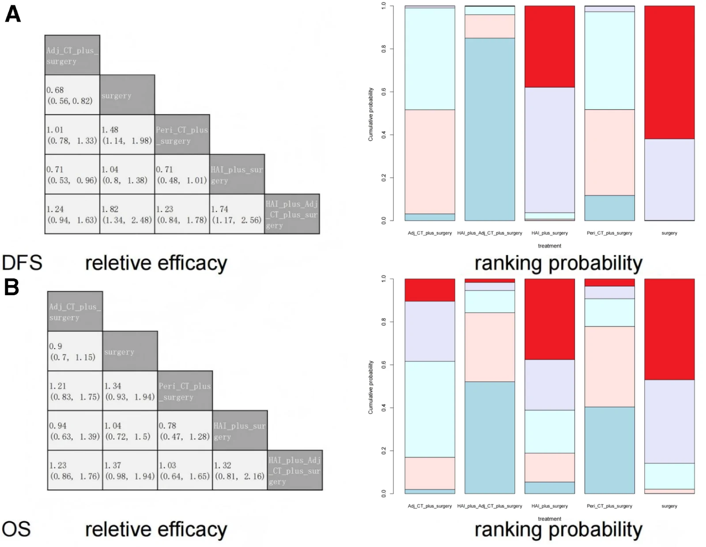
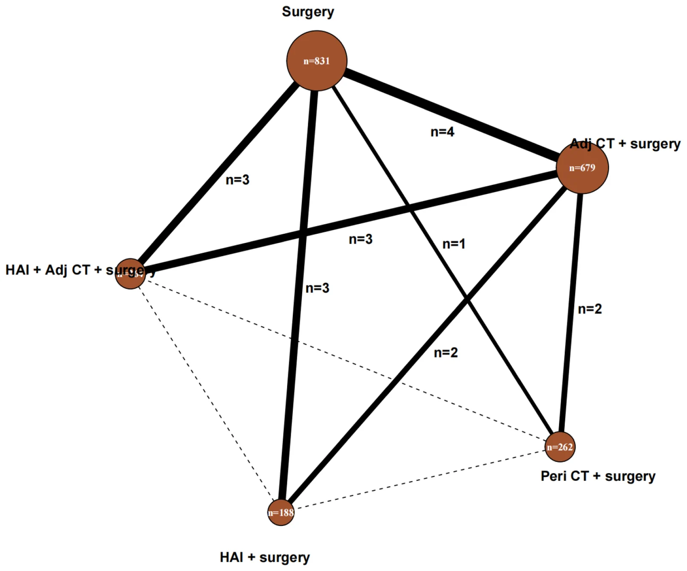
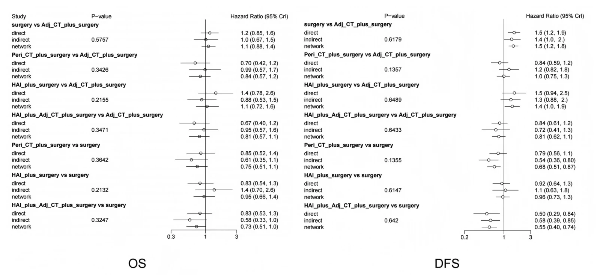

IR Weekly Literature Digest · Full-text analysis
Comparative efficacy of common adjuvant treatments after resection of colorectal liver metastases: A systematic review and network meta-analysis.
Medicine (Baltimore). 2026 Oct 23;105(43):e51187. doi: 10.1097/MD.0000000000051187
Read the original articlePubMedOverview
This Bayesian network meta-analysis (NMA) of 18 randomized trials (stated total 2184 patients) compared five adjuvant strategies after curative-intent resection of upfront resectable colorectal liver metastases (CRLM). The strategies were surgery alone, adjuvant systemic chemotherapy (CT), perioperative intravenous CT, adjuvant hepatic arterial infusion (HAI) CT, and HAI combined with intravenous CT. Compared with surgery alone, active strategies improved disease-free survival (DFS). HAI plus intravenous CT had the highest ranking probability (85.01%) and a pairwise HR of 0.55 (95% CrI 0.40-0.74). No strategy differed significantly for overall survival (OS). The evidence is low quality and sparse. The grouping of heterogeneous regimens is crude. The text contains internal contradictions, including a conclusion that does not match the results. The ranking claims should be treated as hypothesis-generating.
Study design
Systematic review and Bayesian random-effects NMA (gemtc/rjags in R 4.1.3), reported under PRISMA-NMA and registered in PROSPERO (CRD42022359464). The Discussion also says no formal protocol was previously published. PubMed, Embase, CENTRAL and CNKI were searched. The paper states "from inception to July, 2026", which is implausible or a typo. Eligible studies were phase II/III RCTs published in English, with resected CRLM and at least one of OS or DFS reported. Screening yielded 7045 records, 1462 duplicates and 487 protocols removed, and 5088 excluded on title and abstract. Eighteen unique studies were included, published 1990-2026. Table 1 lists 19 comparisons because Wagman 1990 is split into a and b. HRs were reconstructed from digitized Kaplan-Meier curves (Engauge Digitizer) when not reported. Recurrence-free survival was accepted as a surrogate for DFS. Risk of bias used the Cochrane tool. Transitivity was checked on age, sample size, % male, % single metastasis and % lesions <5 cm. Heterogeneity was assessed with tau2 and I2, and inconsistency with node-splitting. MCMC used 20,000 burn-in and 50,000 sampling iterations. Convergence was checked with trace/density plots and Brooks-Gelman-Rubin statistics. Treatments were ranked by SUCRA/rank probability. Publication bias was assessed with a comparison-adjusted funnel plot.
Patients
Adults with histologically or cytologically confirmed CRLM who underwent curative-intent resection, then received adjuvant or perioperative treatment or none. Non-randomized studies, studies without extractable OS/DFS, duplicates, and trials whose authors did not respond to data queries were excluded. In Table 1, sample sizes range from 11 (Wagman 1990a) to 364 (Nordlinger 2013). Most trials enrolled liver-only metastases, but Langer 2002 was mixed and Allen-Mersh 2000 and Chun 2020 did not report. Single-metastasis proportion ranged from 0% to 100% where reported, and was often not reported. Lesion size <5 cm was reported in only 6 studies (68-86%). Median follow-up ranged from 34.5 to 247.2 months, and several studies did not report it. Summing the Table 1 sample sizes gives about 2262, which does not match the stated 2184. This is unexplained, perhaps because of the Wagman a/b split or late additions.
Intervention and comparator
Five nodes were defined.
(1) Surgery alone.
(2) Adjuvant systemic CT: IV 5-FU/LV (Langer, Portier), oral UFT/LV (Hasegawa), and mFOLFOX6 (Kanemitsu).
(3) Perioperative IV CT: mFOLFOX4 versus surgery alone (Nordlinger), plus FOLFOX/FOLFIRI and FOLFOX versus adjuvant-only CT (Chun, Matsumura).
(4) Adjuvant HAI (FUDR, 5-FU/FA, 5-FU/MMC, 5-FU) versus surgery alone (Wagman, Lorenz, Rudroff) or versus adjuvant systemic CT (Kusano 2017).
(5) HAI plus IV CT, versus surgery alone (Tono, Kemeny 2002, Kemeny 2005), versus adjuvant systemic CT (Kusano 2018, Allen-Mersh, Wang 2025), or versus IV oxaliplatin/LV5FU2 (Gelli).
Regimens were collapsed by therapeutic intent to keep the network connected. Surgical versus percutaneous HAI pump or catheter placement and FUDR versus other agents were not distinguished. Wagman 1990b used HAI FUDR as the control arm, which sits oddly in the node scheme. The network is thin: surgery alone is the common comparator, and several links rest on one or two small trials.
Results
| DFS - pairwise versus surgery alone (primary endpoint 1) | Adjuvant CT HR 0.68 (95% CrI 0.56-0.82). Adjuvant HAI plus CT HR 0.55 (95% CrI 0.40-0.74). Perioperative CT HR 0.68 (95% CrI 0.51-0.87). The text gives no HR or CrI for adjuvant HAI alone in the pairwise analysis. |
|---|---|
| DFS - network estimates and ranking | The NMA text states that HAI plus IV CT, adjuvant CT, perioperative CT and adjuvant HAI all significantly improved DFS versus surgery alone. Numerical NMA estimates are only in Figure 5 and not in the text. Probability of being best: HAI plus IV CT 85.01%, perioperative CT 11.75%, adjuvant CT 3.17%. |
| OS (primary endpoint 2) | No comparison, direct or network, was statistically significant, and results agreed with pairwise analysis. Probability of being best: HAI plus IV CT 52.46%, perioperative CT 40.25%, adjuvant HAI 5.25%. No OS HRs or CrIs are given in the text. A 52% versus 40% ranking probability with null contrasts shows substantial uncertainty. |
| Heterogeneity | DFS global I2 0 to 52.4% (moderate). Local DFS heterogeneity 0 to 53.3%. OS global I2 0 to 4.5%. OS local heterogeneity 0 to 1.4%. |
| Inconsistency and convergence | Global inconsistency I2 = 0% for DFS and OS. Node-splitting P >.05 for all comparisons with both direct and indirect evidence, a test with very low power in a network this sparse. Trace/density plots and Gelman shrink factors indicated convergence. |
| Risk of bias and publication bias | Overall study quality was rated low. Nine studies did not describe allocation concealment, and most did not blind participants. Four studies had incomplete outcome data issues and 3 had high risk of selective reporting. The funnel plot was symmetric for OS but asymmetric for DFS, so DFS pooled results may be affected by publication bias. |
| Authors' conclusion (internal inconsistency) | The final paragraph says adjuvant CT may be optimal for DFS and perioperative CT optimal for OS. This contradicts the Results and earlier Discussion, which rank HAI plus IV CT first for both outcomes. The conclusions are therefore not reliably supported as written. |
Key figures


| Reference | Sample size (male%) | Age, yrs | Mets | Single Mets | Size < 5 cm | Study arm | Control arm | Median follow-up | Endpoints |
|---|---|---|---|---|---|---|---|---|---|
| Langer 2002 | 129 (65%) | 63.5 vs 60.0 | Mixed | 65% | n.r. | Adjuvant systemic CT with IV 5FU/LV plus surgery | Surgery alone | n.r. | OS, DFS |
| Portier 2006 | 173 (58%) | 63 vs 63 | Liver | 69% | 72% | Adjuvant systemic CT with IV 5FU/LV plus surgery | Surgery alone | 87 months | OS, DFS |
| Hasegawa 2016 | 180 (68%) | 62.3 vs 64.4 | Liver | 46% | 78% | Adjuvant systemic CT with PO UFT/LV plus surgery | Surgery alone | 57 months | OS, DFS |
| Kanemitsu 2020 | 300 (60%) | 63 vs 65 | Liver | 91% | 86% | Adjuvant systemic CT with IV mFOLFOX6 plus surgery | Surgery alone | 59 months | OS, DFS |
| Nordlinger 2013 | 364 (66%) | 62 vs 64 | Liver | 52% | n.r. | Perioperative systemic CT with IV mFOLFOX4 plus surgery | Surgery alone | 102 months | OS, DFS |
| Wagman 1990a | 11 (64%) | 55.0 vs 60.7 | Liver | 100% | n.r. | HAI with FUDR plus surgery | Surgery alone | n.r. | OS, DFS |
| Wagman 1990b | 24 (71%) | 61.8 vs 59.7 | Liver | 0% | n.r. | HAI with FUDR plus surgery | HAI with FUDR | n.r. | OS, DFS |
| Lorenz 1998 | 219 (56%) | 61 vs 61 | Liver | 58% | n.r. | HAI with 5FU/FA plus surgery | Surgery alone | 34.5 months | OS, DFS |
| Rudroff 1999 | 30 (33%) | 58 vs 57 | Liver | 66% | n.r. | HAI with 5FU/MMC plus surgery | Surgery alone | 240 months | OS, DFS |
| Tono 2000 | 19 (57%) | 59.0 vs 61.0 | Liver | 53% | n.r. | HAI with 5FU plus adjuvant systemic CT with 5FU plus surgery | Surgery alone | 62.2 months | OS, DFS |
| Kemeny 2002 | 109 (63%) | 58 vs 62 | Liver | 62% | n.r. | HAI with FUDR plus adjuvant systemic CT with 5FU plus surgery | Surgery alone | 51 months | OS, DFS |
| Kemeny 2005 | 156 (58%) | 59 vs 59 | Liver | 38% | n.r. | HAI with FUDR plus adjuvant systemic CT with 5FU/LV plus surgery | Surgery alone | 247.2 months | OS, DFS |
| Kusano 2017 | 91 (74%) | 63.0 vs 62.5 | Liver | 57% | 68% | HAI with 5FU plus surgery | Adjuvant systemic CT with UFT/LV plus surgery | 120 months | OS, DFS |
| Kusano 2018 | 44 (64%) | 62.4 vs 64.2 | Liver | 39% | 77% | HAI with 5FU plus adjuvant systemic CT with UFT/LV plus surgery | Adjuvant systemic CT with UFT/LV plus surgery | 84 months | OS, DFS |
| Allen-Mersh 2000 | 84 (52%) | 60.3 vs 60.3 | n.r. | n.r. | n.r. | HAI with 5FU plus systemic CT with 5FU/FA plus surgery | Adjuvant systemic CT with 5FU/FA plus surgery | n.r. | OS, DFS |
| Chun 2020 | 76 (70%) | 63.5 vs 58.8 | n.r. | 34% | n.r. | Perioperative systemic CT with IV FOLFOX/FOLFIR plus surgery | Adjuvant systemic CT with IV FOLFOX/FOLFIR plus surgery | 129.6 months | OS, DFS |
| Matsumura 2022 | 77 (66%) | 64 vs 65 | Liver | n.r. | n.r. | Perioperative systemic CT with IV FOLFOX plus surgery | Adjuvant systemic CT with IV FOLFOX plus surgery | 44.7 months | OS, DFS |
| Gelli 2026 | 99 | n.r. | Liver | n.r. | n.r. | HAI oxaliplatin + IV LV5FU2 | IV oxaliplatin + IV LV5FU2 | 59 months | OS, DFS |
| Wang 2025 | 77 (70.1%) | 56 vs 56 | Liver | 0.31 | 0.86 | Adj_CT_plus_HAI_FUDR (systemic FOLFOX/FOLFIRI + hepatic arterial infusion floxuridine) | Adj_CT (systemic FOLFOX/FOLFIRI alone) | 51.7 months | OS, DFS |

Safety
Not assessed. Toxicity, perioperative morbidity, catheter or pump complications, and HAI-specific events (biliary sclerosis, arterial thrombosis) were not extracted or analyzed. For an IR audience this is a major gap when weighing HAI plus systemic CT.
Strengths
- Registered in PROSPERO, with a pre-specified PRISMA-NMA framework and a rigorous Bayesian approach.
- RCT-only inclusion, avoiding confounding from non-randomized data.
- Explicit checks of transitivity, heterogeneity, node-split inconsistency, convergence and funnel-plot asymmetry.
- First NMA to put HAI, systemic adjuvant and perioperative strategies in one network, including recent trials (Gelli, Wang).
- Authors openly acknowledge sparse direct evidence, regimen pooling and the lack of an HAI route subgroup.
Limitations
- Sparse, small-trial network: many links rest on one or two small trials (for example Wagman n=11 and 24, Tono n=19). Several nodes have few patients. Rank probabilities such as 85% for DFS are unstable in such a network and cannot support a 'best treatment' claim.
- Heterogeneous interventions are lumped: FUDR, 5-FU, UFT, FOLFOX and FOLFIRI regimens, surgical versus percutaneous HAI, and 1990s versus modern CT backbones were pooled by intent. This undermines transitivity. Perioperative CT mixes neoadjuvant-plus-adjuvant versus surgery alone (Nordlinger) with perioperative versus adjuvant-only comparisons (Chun, Matsumura), so the node answers different questions.
- HAI plus IV CT is linked mainly to old FUDR/5-FU trials versus surgery alone or versus adjuvant CT. Its DFS superiority is therefore partly indirect, with little head-to-head data against modern FOLFOX-based adjuvant therapy. No OS benefit was shown, and DFS is not a validated OS surrogate here.
- Study quality was low overall, with unclear allocation concealment, lack of blinding, incomplete data and selective-reporting risk. Some HRs were reconstructed from digitized curves, which adds error. RFS was used as a surrogate for DFS. The DFS funnel plot was asymmetric, suggesting small-study or publication bias, and only English-language RCTs were included.
- Transitivity assessment used only a few aggregate covariates (age, % male, % single metastasis, % <5 cm), many of them unreported. Key effect modifiers (RAS/BRAF status, synchronous versus metachronous disease, number of lesions, margin status, prior CT) were not assessed. Node-splitting has low power, so 'no inconsistency' is weak reassurance. No subgroup, meta-regression or sensitivity analysis was done.
- Reporting inconsistencies reduce confidence: the search date 'July, 2026', the PROSPERO registration versus 'did not previously publish the formal protocol', the Table 1 total (about 2262) versus the stated 2184, and the Discussion mismatch discussed above. Numerical NMA estimates and CrIs are only in Figure 5, and the text omits OS HRs. Inclusion of the 2026 and 2025 trials alongside CNKI searching despite an English-only criterion is unclear.
- Safety, quality of life, HAI procedural complications and cost were not analyzed. Resectability definitions and the era of surgical and systemic care vary widely, with follow-up from 34.5 to about 247 months.
Implications for practice
Adjuvant or perioperative chemotherapy probably lowers recurrence after CRLM resection. HAI-containing regimens (HAI plus systemic CT) look numerically best for DFS. No strategy has shown an OS advantage in this analysis. For IR and HPB teams, this supports considering HAI pump or catheter programs within multidisciplinary discussion, but it does not show superiority over modern systemic therapy. The HAI plus systemic data come largely from small or older trials, and the more recent comparisons (Gelli, Wang) are small. Confidence in the DFS direction versus surgery alone is moderate. Confidence in the ranking of HAI plus IV CT as best is low, and confidence for OS is very low. The paper's concluding statement is contradicted by its own results. Practice should be driven by the primary trials (for example the Kemeny 2005 HAI trial, JCOG0603, EORTC 40983) and the toxicity and expertise requirements of HAI, not by these rankings. Properly powered RCTs comparing HAI plus modern systemic CT with systemic CT alone, with standardized access technique, are needed.